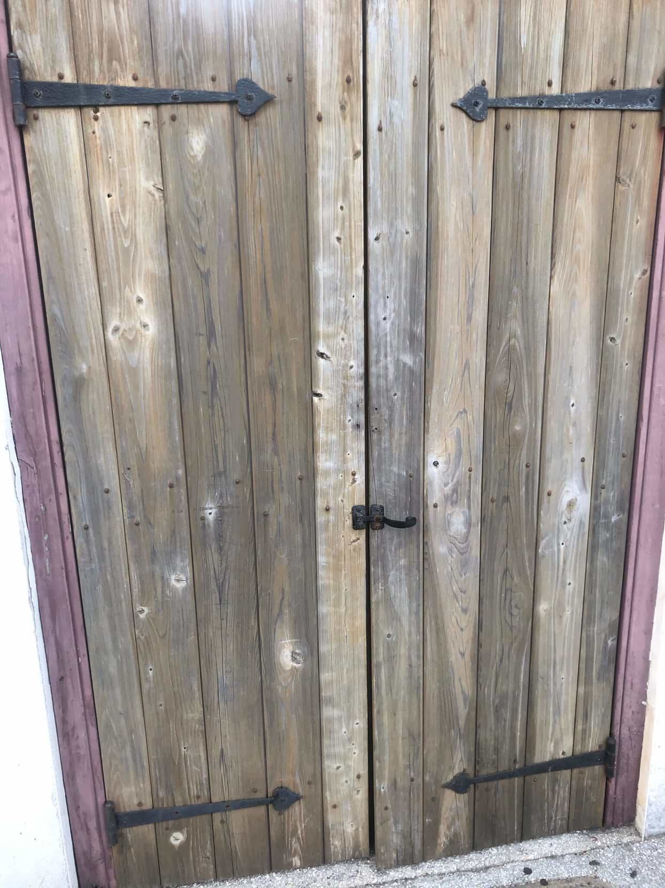

SCP-004

- Item nº:
- SCP-004
- Classe do objeto:
- Euclid
Procedimentos Especiais de Contenção:
Ao manusear os itens SCP-004-2 a SCP-004-13, o procedimento correto é vital. Os itens não podem ser retirados da instalação a menos que acompanhados por dois agentes de segurança de Nível 4. Em nenhuma circunstância qualquer outro componente do SCP-004 deve ser levado através do SCP-004-1. Os efeitos de fazer isso ainda são desconhecidos, e o custo atual da experimentação torna inviável qualquer pesquisa adicional. Caso qualquer um dos objetos contidos no SCP-004-1 rompa a contenção, ou a instalação seja violada, as chaves devem ser levadas para dentro e a porta fechada antes da ativação da ogiva nuclear local do Site 62. A retirada não autorizada das chaves da área de testes é motivo para eliminação imediata.
Autorização de Nível 1 é necessária para o acesso básico ao SCP-004-1; autorização de Nível 4 é necessária para o uso do SCP-004-2 ao SCP-004-13.
Descrição:
O SCP-004 consiste em uma velha porta de celeiro de madeira (SCP-004-1) e um conjunto de doze chaves de aço enferrujadas (SCP-004-2 a SCP-004-13). A porta em si é a entrada de uma fábrica abandonada em [DADOS EXPURGADOS].
Histórico Cronológico
02/07/1949: Um grupo de três jovens invade uma propriedade federal perto de ██████████ e encontra a porta. Segundo o depoimento deles, encontraram um conjunto de chaves enferrujadas em uma caixa de ferro e descobriram qual porta as chaves abriam. Os jovens são levados sob custódia depois de contatarem o xerife █████████████████ quando um de seus amigos (SCP-004-CAS01) desaparece.
03/07/1949: As autoridades locais encontram a mão direita decepada do SCP-004-CAS01 a oito quilômetros do SCP-004-1. Outras partes do corpo do SCP-004-CAS01 são encontradas espalhadas a até 32 km da fábrica. Sob interrogatório, os jovens detidos contam às autoridades que, ao abrir a porta com uma das chaves, o SCP-004-CAS01 foi dilacerado em várias partes, cada uma das quais desapareceu. Nesse ponto, a Fundação SCP assume a investigação.
04/07/1949: O Agente █████ da SCP obtém as chaves das autoridades locais para iniciar os testes. Os testes mostram que o SCP-004-2 ao SCP-004-13 encaixam todos na mesma fechadura da grande porta gradeada. Doze funcionários Classe D são designados para testar os efeitos da porta. Dos doze sujeitos de teste, cada um tentando entrar na sala com uma chave diferente, apenas dois sobrevivem. Abrir a porta com qualquer chave, exceto o SCP-004-7 ou o SCP-004-12, fez os sujeitos serem dilacerados em várias direções; no entanto, nenhuma parte desmembrada foi encontrada até mais tarde. Até o momento desta redação, apenas duas partes de cada sujeito foram recuperadas (com exceção do sujeito que usou o SCP-004-█, cujos pedaços foram espalhados em locais próximos). Os outros, para todos os efeitos, desapareceram da existência.
Dos dois sobreviventes, apenas um (que usou o SCP-004-7) voltou ileso. O outro voltou em estado quase catatônico, capaz apenas de se retirar da sala e desabar no chão, e precisou ser contido para não arrancar os próprios olhos (ver Apêndice A: Efeitos do SCP-004 na Saúde Mental). O sujeito que usou o SCP-004-7 disse que havia entrado em uma sala enorme, impossivelmente grande para o tamanho do prédio ao qual a porta está ligada. Depois que ele saiu, o SCP-004-1 foi mantido aberto e um esquadrão armado de agentes de Nível 3 entrou. O tamanho da sala é impossível de medir, e o batente da porta e as pessoas dentro da sala são as únicas partes que podem ser sentidas ou iluminadas.
16/07/1949: Os jovens suspeitos e o xerife █████████████████ são eliminados.
02/08/1949: █████████████████ é declarada área perigosa "devido a artefatos explosivos não detonados" e cercas são erguidas para impedir a entrada de civis. Começam os testes para determinar a segurança da exposição ao ambiente por trás do SCP-004-1.
01/12/1950: Anomalias espaço-temporais resultantes da exposição ao SCP-004 são confirmadas. Os testes são suspensos até segunda ordem.
02/07/19██: Os restos mortais desaparecidos do SCP-004-CAS01 surgem inesperadamente do lado de fora do SCP-004-1. Apesar de terem sido mortos décadas antes, os restos do SCP-004-CAS01 não estão decompostos de nenhuma forma e ainda estão quentes ao toque. O sangue permanece sem coagular. Os restos são encaminhados para testes.
04/07/19██: Os restos desaparecidos de um dos doze (12) sujeitos de teste originais surgem de maneira semelhante aos do SCP-004-CAS01. Os restos foram designados SCP-004-CAS02. Os registros sugerem que tanto o SCP-004-CAS01 quanto o CAS02 usaram o SCP-004-██.
21/03/1999: Com a enorme proliferação de armas nucleares e a Terceira Guerra Mundial a apenas ██ anos de distância, começa a construção de uma instalação dentro do SCP-004-1. A instalação deve armazenar suprimentos para ███████ pessoas-dia.
21/04/1999: █████████████████ ordenou que a instalação dentro do SCP-004-1 fosse ampliada para incluir armazenamento de emergência para todos os espécimes móveis do SCP-███ e um banco de dados de ██ petabytes para o armazenamento de todos os dados da SCP. A instalação passa a ser chamada de Site-62.
25/09/2000: O Site-62 entra em operação. Laboratórios e unidades de contenção estão completos e podem conter os espécimes mais perigosos. Começa o backup do banco de dados da SCP.
25/01/2001: Devido às anomalias temporais (ver "Anomalias Espaço-Temporais" abaixo), todo o pessoal que trabalha no Site-62 agora é obrigado a residir permanentemente no local. As famílias do pessoal devem ser informadas de que seus entes queridos morreram em um acidente industrial. Corpos clonados foram preparados para o funeral.
14/08/2003: Grande apagão no nordeste dos Estados Unidos e em todo o Canadá. Devido à falha inicial de vários geradores da SCP, o Site-62 ficou sem energia por cinquenta e três (53) minutos. Durante esses cinquenta e três (53) minutos, os que estavam no local ficaram completamente sem nenhuma fonte de luz. Relataram "sentir" criaturas e pessoas, embora nenhuma entidade anormal pudesse ser vista ou percebida. Alguns membros selecionados do pessoal da instalação puderam ler ████████████ (Apêndice A) e disseram que as criaturas "sentidas" tinham tamanho humanoide, mas eram semelhantes à enorme criatura verde descrita.
Anomalias Espaço-Temporais
O SCP-004 parece propagar anomalias espaço-temporais. O pessoal que sai da instalação relata perda de tempo. Aqueles que passaram semanas no local insistem que estiveram na instalação por apenas alguns dias, e os registros de trabalho concluído e suprimentos consumidos sustentam essas afirmações. Outras anomalias temporais envolvem o SCP-004-2 ao -13, especialmente o reaparecimento do SCP-004-CAS01 e do SCP-004-CAS02 exatamente ██ anos depois de usarem o SCP-004-██. ████████████████████ foi designado para investigar todos os aspectos dessas anomalias temporais. As anomalias espaciais incluem as dimensões impossivelmente grandes da área aberta pelo SCP-004-7. Da mesma forma, o incidente do apagão de 2003 sugere que existe um plano de existência alternativo dentro do mesmo espaço ocupado pelo Site-62.
Notas Adicionais
Os testes com o SCP-004 revelam que dez das chaves abrem o SCP-004-1 em uma dimensão onde as leis da física e da topologia são significativamente diferentes das de nossa dimensão de origem. Sujeitos de teste que enfrentam essas condições hostis são dilacerados, e suas partes são depositadas em vários locais, dos quais apenas três foram verificados como estando na Terra. O material depositado em dois desses pontos aparece imediatamente; o material depositado no terceiro aparece exatamente ██ anos no futuro. Os outros sete locais são atualmente desconhecidos.
Os testes atuais se concentram em duas linhas de pesquisa. A primeira é encontrar maneiras de sobreviver às topologias hostis do SCP-004. A segunda [DADOS EXPURGADOS] sugere que o SCP-004-2 ao -13 podem abrir outras portas além do SCP-004-1.
> ver Apêndice A: Efeitos do SCP-004-12 na Saúde Mental
Apêndice A: Efeitos do SCP-004-12 na Saúde Mental
Todo o pessoal Classe D que usa o SCP-004-12 volta em estado catatônico, incapaz de falar. Alguns podem ter energia suficiente para tentar arrancar os próprios olhos. Dos 16 sujeitos, apenas 4 sobreviveram. Apenas um recuperou a fala, após psicoterapia de longo prazo. Ele conseguiu contar ao psiquiatra que viu uma enorme criatura verde, tão grande que grande parte de seu corpo se estendia além de seu campo de visão. Relatou medo inato e um reconhecimento súbito, "como se fosse algo enterrado nos [seus] medos primais", e a implantação forçada de memórias "incompreensíveis". O sujeito apresenta amnésia anterógrada e retrógrada aguda.
> ver Apêndice B: Informações Adicionais (SCP-004-14)
Apêndice B: Informações Adicionais
Item nº: SCP-004-14
Data da descoberta: 02/09/1950
Origem do objeto: O objeto foi descoberto em outra parte da área da fábrica, no escritório do gerente, até então desconhecido.
Descrição: O objeto é uma grande caixa de madeira sem verniz. A caixa pode ser destrancada pela chave "segura", SCP-004-7, assim como por cinco das chaves "inseguras" (ver Documento SCP-004-1).
Ao destrancar o SCP-004-14 com o SCP-004-7, a caixa se abre automaticamente nas dobradiças. O volume do espaço interno é exatamente cinco vezes maior do que as dimensões externas indicam. Itens colocados dentro enquanto a tampa permanece aberta não afetam o peso nem nenhuma outra propriedade da caixa. Quando a tampa é fechada e trancada, porém, tudo o que estiver dentro desaparece de forma irrecuperável. O pessoal trancado dentro da caixa também é irrecuperável, embora perder pessoal dessa forma pareça afetar significativamente os sonhos vividos por [DADOS EXPURGADOS].